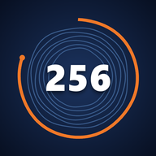

医療費控除メモ サポート
病院・薬局のレシートを撮って家族別にためて、国税庁の「医療費集計フォーム」の形で書き出せるiPhoneアプリです。
よくある質問
書き出したファイルを確定申告書等作成コーナーで読み込むには
- アプリの「書き出し」で年分を選び、「集計フォームを書き出す」を押して「ファイル」アプリに保存します（パソコンに送ってもかまいません）。
- 国税庁の確定申告書等作成コーナーで申告書を作り、医療費控除の入力で「医療費集計フォームを読み込んで入力する」を選びます。
- 保存したファイルを選びます。読み込まれた明細を確かめてから先へ進んでください。
作成コーナーの画面は年によって変わります。最新の手順は国税庁「医療費控除を受ける方へ」をご覧ください。
マイナポータル連携と併用できますか
できます。保険診療の分はマイナポータル連携で取り込み、連携で取れない分（自費診療、市販薬、通院の交通費、はり・きゅう・整骨院、連携していない家族の分など）をこのアプリで集計する使い方が便利です。同じ支払いを二重に入れないようにしてください。
セルフメディケーション税制を使いたい
国税庁の医療費集計フォームはセルフメディケーション税制には使えません（国税庁の案内）。このアプリの集計は通常の医療費控除向けです。
レシートがうまく読み取れません
明るい場所で、領収書を平らにして撮ると読み取りやすくなります。病院の領収書は「領収金額」「負担額」、薬局は「一部負担金」の金額を読み取ります。読み取れなかった項目は手で入力してください。
控除の目安と実際の額が違う
アプリの表示は目安です。実際の控除額と還付額は、作成コーナーで申告書を作ったときの結果が正しい額です。所得が200万円未満の方は「書き出し」の設定で総所得金額等の目安を入れると、10万円ではなく所得の5%で計算します。
iPhoneを買い替えたら記録は引き継げますか
「書き出し」の「バックアップを書き出す」でファイルを保存し、新しいiPhoneで「バックアップを読み込む」を押してください。iPhoneの移行機能でも引き継げます。
購入した「集計フォームの書き出し」が使えなくなった
同じApple アカウントでサインインし、「書き出し」の「購入を復元する」を押してください。
アプリを消すと記録はどうなりますか
iPhoneの中の記録はすべて消えます。消す前にバックアップかCSVを書き出してください。
お問い合わせ
BOOTHのショップページの「ショップへのお問い合わせ」からご連絡ください。
株式会社256について
代表は、会社員をしながら自分の会社を運営しています（40歳で個人事業主として独立、44歳で法人化）。自分で確定申告や帳簿をつけてきた経験から、個人事業主・会社員・家族の「お金の事務」をラクにするツールを作っています。